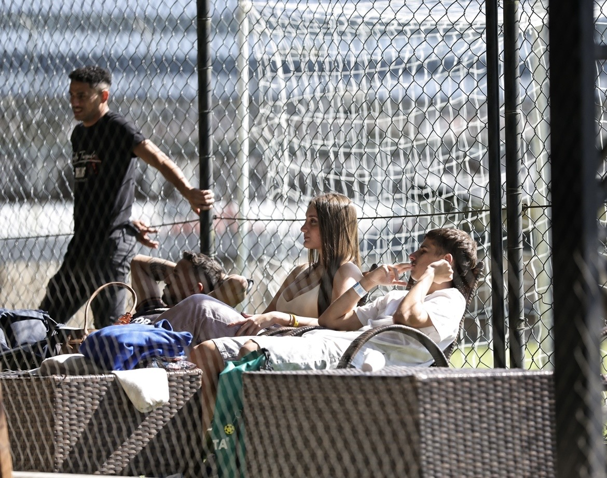

Existem dias que a gente vive sem imaginar que vão mudar a nossa vida para sempre. Aquele parecia ser apenas mais um campeonato. Mais uma quadra. Mais uma partida. Mais algumas pessoas na arquibancada esperando o próximo ponto. O ginásio estava cheio. O barulho era constante. A bola tocava na rede. As pessoas gritavam. Aplaudiam. Comemoravam. O som dos passos correndo pela areia se misturava com o eco das vozes. Para qualquer pessoa que estivesse ali, você era apenas mais uma espectadora acompanhando o jogo. Mas eu nunca consegui enxergar daquele jeito. No meio de toda aquela confusão, havia uma calma que só existia onde você estava. Era como se o restante do ginásio perdesse completamente a importância. O jogo continuava. Os pontos continuavam acontecendo. A torcida continuava fazendo barulho. Mas, por algum motivo que eu nunca consegui explicar, meus olhos sempre encontravam você outra vez. Hoje eu percebo que, muito antes de ganhar aquela final... o meu coração já tinha encontrado aquilo que realmente importava.
Dizem que o tempo nunca para. Naquele dia, ele parou. Não foi uma metáfora. Não foi um exagero. Foi uma sensação que eu nunca mais consegui esquecer. Enquanto o cronômetro continuava correndo, alguma coisa dentro de mim simplesmente desacelerou. Durante alguns segundos, eu já não escutava mais a torcida. Não lembrava do placar. Não pensava na próxima bola. Parecia que o mundo inteiro tinha perdido as cores... menos você. É estranho pensar que um único instante consegue durar para sempre dentro da memória de alguém. Mas aquele durou. Porque, sem perceber, você transformou um simples campeonato em uma das lembranças mais bonitas que eu carrego. Talvez você nunca tenha imaginado isso. Talvez, para você, aquele fosse apenas mais um dia. Para mim... foi o dia em que eu comecei a enxergar o futuro de uma forma completamente diferente.
Existe uma coisa que sempre passa pela minha cabeça quando olho para essa fotografia. Você não fazia ideia. Você não fazia ideia de que, enquanto apenas assistia ao jogo, alguém estava encontrando uma das pessoas mais importantes da própria vida. Você não precisou dizer absolutamente nada. Não precisou fazer nenhum gesto. Não precisou tentar chamar atenção. Você simplesmente estava sendo você. E talvez tenha sido exatamente isso que tornou aquele momento tão inesquecível. Porque as coisas mais bonitas nunca fazem esforço para acontecer. Elas simplesmente acontecem. Hoje eu penso em quantas decisões diferentes poderiam ter mudado aquela história. E, sinceramente... só de imaginar que aquele dia poderia não ter existido... eu percebo o tamanho da sorte que tive. Porque, sem que ninguém percebesse... enquanto uma partida estava sendo disputada dentro da quadra, a minha vida inteira começava a mudar do lado de fora dela.
Anos vão passar. Novos campeonatos vão acontecer. Troféus vão envelhecer. Medalhas talvez acabem esquecidas dentro de alguma gaveta. O placar daquela final provavelmente desaparecerá da minha memória. Mas existe uma coisa que o tempo nunca vai conseguir apagar. Essa fotografia. Porque ela não registra apenas uma pessoa na arquibancada. Ela registra o exato instante em que a minha história encontrou a sua. Sempre que olho para essa imagem, eu não vejo apenas uma lembrança. Eu vejo o começo. O começo das conversas. Das risadas. Dos abraços. Das memórias que hoje significam tanto para mim. Talvez essa seja apenas uma fotografia. Mas, para mim... ela sempre será o lugar onde tudo começou. O registro silencioso do dia em que, sem perceber, você entrou na minha vida... e nunca mais saiu do meu coração.